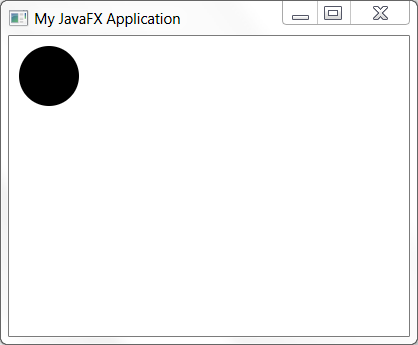

public abstract class Application
extends java.lang.Object
Life-cycle
The entry point for JavaFX applications is the Application class. The JavaFX runtime does the following, in order, whenever an application is launched:
init() methodstart(javafx.stage.Stage) methodPlatform.exit()implicitExit
attribute on Platform is truestop() methodNote that the start method is abstract and must be overridden.
The init and stop methods have concrete implementations
that do nothing.
Parameters
Application parameters are available by calling the getParameters()
method from the init() method, or any time after the init
method has been called.
Threading
JavaFX creates an application thread for running the application start
method, processing input events, and running animation timelines. Creation
of JavaFX Scene and Stage objects as well as modification of
scene graph operations to live objects (those objects already
attached to a scene) must be done on the JavaFX application thread.
The Application constructor and init method are called on
the launcher thread, not on the JavaFX Application Thread.
This means that an application must not construct a Scene
or a Stage in either the constructor or in the init
method.
An application may construct other JavaFX objects in the init
method.
Example
The following example will illustrate a simple JavaFX application.
import javafx.application.Application;
import javafx.scene.Group;
import javafx.scene.Scene;
import javafx.scene.shape.Circle;
import javafx.stage.Stage;
public class MyApp extends Application {
public void start(Stage stage) {
Circle circ = new Circle(40, 40, 30);
Group root = new Group(circ);
Scene scene = new Scene(root, 400, 300);
stage.setTitle("My JavaFX Application");
stage.setScene(scene);
stage.show();
}
}
The above example will produce the following:

| Modifier and Type | Class and Description |
|---|---|
static class |
Application.Parameters
Encapsulates the set of parameters for an application.
|
| Constructor and Description |
|---|
Application() |
| Modifier and Type | Method and Description |
|---|---|
HostServices |
getHostServices()
Gets the HostServices provider for this application.
|
Application.Parameters |
getParameters()
Retrieves the parameters for this Application, including any arguments
passed on the command line and any parameters specified in a JNLP file
for an applet or WebStart application.
|
void |
init()
The application initialization method.
|
static void |
launch(java.lang.Class<? extends Application> appClass,
java.lang.String... args)
Launch a standalone application.
|
static void |
launch(java.lang.String... args)
Launch a standalone application.
|
void |
notifyPreloader(Preloader.PreloaderNotification info)
Notifies the preloader with an application-generated notification.
|
abstract void |
start(Stage primaryStage)
The main entry point for all JavaFX applications.
|
void |
stop()
This method is called when the application should stop, and provides a
convenient place to prepare for application exit and destroy resources.
|
public static void launch(java.lang.Class<? extends Application> appClass, java.lang.String... args)
The launch method does not return until the application has exited, either via a call to Platform.exit or all of the application windows have been closed.
Typical usage is:
public static void main(String[] args) {
Application.launch(MyApp.class, args);
}
where MyApp is a subclass of Application.appClass - the application class that is constructed and executed
by the launcher.args - the command line arguments passed to the application.
An application may get these parameters using the
getParameters() method.java.lang.IllegalStateException - if this method is called more than once.java.lang.IllegalArgumentException - if appClass is not a
subclass of Application.public static void launch(java.lang.String... args)
The launch method does not return until the application has exited, either via a call to Platform.exit or all of the application windows have been closed.
Typical usage is:
public static void main(String[] args) {
Application.launch(args);
}
args - the command line arguments passed to the application.
An application may get these parameters using the
getParameters() method.java.lang.IllegalStateException - if this method is called more than once.public void init()
throws java.lang.Exception
The implementation of this method provided by the Application class does nothing.
NOTE: This method is not called on the JavaFX Application Thread. An application must not construct a Scene or a Stage in this method. An application may construct other JavaFX objects in this method.
java.lang.Exceptionpublic abstract void start(Stage primaryStage) throws java.lang.Exception
NOTE: This method is called on the JavaFX Application Thread.
primaryStage - the primary stage for this application, onto which
the application scene can be set. The primary stage will be embedded in
the browser if the application was launched as an applet.
Applications may create other stages, if needed, but they will not be
primary stages and will not be embedded in the browser.java.lang.Exceptionpublic void stop()
throws java.lang.Exception
The implementation of this method provided by the Application class does nothing.
NOTE: This method is called on the JavaFX Application Thread.
java.lang.Exceptionpublic final HostServices getHostServices()
public final Application.Parameters getParameters()
NOTE: this method should not be called from the Application constructor, as it will return null. It may be called in the init() method or any time after that.
public final void notifyPreloader(Preloader.PreloaderNotification info)
info - the application-generated preloader notificationCopyright (c) 2008, 2014, Oracle and/or its affiliates. All rights reserved.